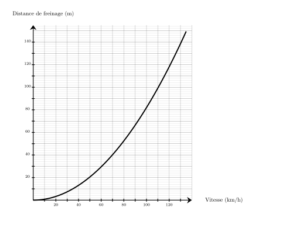
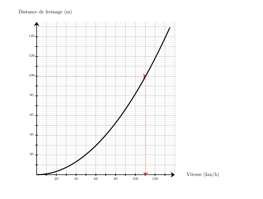
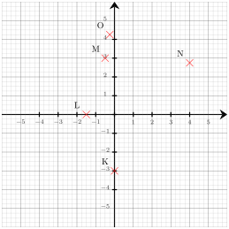
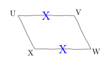
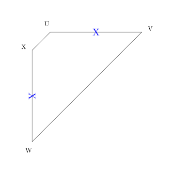
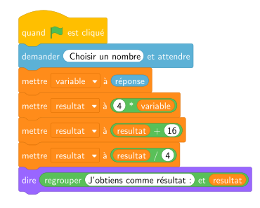

Une voiture freine sur une route sèche et parcourt $100\text{ m}$.
En utilisant le graphique ci-dessous, dire à quelle vitesse elle roulait ?

Pour une distance de freinage de $100\text{ m}$, la vitesse est d'environ ${\color{#8B3C52}\boldsymbol{110}}\text{ km/h}$.

03
Question
Convertir $153$ minutes en heures ($\text{h}$) et minutes ($\text{min}$).
Mentalement :
On cherche le multiple de $60$ inférieur à $153$ le plus grand possible. C'est $2\times 60 = 120$.
Ainsi $153 = 120 + 33$ donc $153\text{\,min\,}= 2\text{\,h\,}33\text{\,min}$. $153 = (2 \times 60) + 33$ donc $153$ minutes = ${\color{#8B3C52}\boldsymbol{2\,\mathbf{h}\,33\,\mathbf{min}}}$.
04
Question
On tire une boule au hasard dans une urne contenant $7$ boules noires et $7$ boules blanches. Quelle est la probabilité d'obtenir une boule noire ? On donnera le résultat sous forme d'une fraction irréductible.
Dans une situation d'équiprobabilité,
on calcule la probabilité d'un événement par le quotient :
$\dfrac{\text{Nombre d'issues favorables}}{\text{Nombre total d'issue}}$.
La probabilité est donc donnée par :
$\dfrac{\text{Nombre de boules noires}}{\text{Nombre total de boules}}
=\dfrac{7}{14} =\dfrac{1{\color{#C5607A}\boldsymbol{\times7}} }{2{\color{#C5607A}\boldsymbol{\times7}}}={\color{#8B3C52}\boldsymbol{\dfrac{1}{2}}}$
01
Question
Combien valent les trois quarts de $20$ ?
Un quart de $20$ est égal à $20 \div 4$, soit 5.
Donc les trois quarts de $20$ valent $3 \times 5 = 15$.
Déterminer les coordonnées respectives des points $N$, $O$, $L$, $K$ et $M$

Les coordonnées respectives des points sont : $N({\color{#8B3C52}\boldsymbol{4}};{\color{#8B3C52}\boldsymbol{2{,}75}})$, $O({\color{#8B3C52}\boldsymbol{-0{,}25}};{\color{#8B3C52}\boldsymbol{4{,}25}})$, $L({\color{#8B3C52}\boldsymbol{-1{,}5}};{\color{#8B3C52}\boldsymbol{0}})$, $K({\color{#8B3C52}\boldsymbol{0}};{\color{#8B3C52}\boldsymbol{-3}})$ et $M({\color{#8B3C52}\boldsymbol{-0{,}5}};{\color{#8B3C52}\boldsymbol{3}})$
04
Question
Déterminer la moyenne, de cette série de note :
Voici une série de 4 notes : $5, 6, 14, 5$.
Quelle est la moyenne de cette série ?
A. $8{,}5$
B. $7{,}5$
C. $7$
D. $6$
La moyenne de cette série est :
$$
\frac{5+6+14+5}{4}=\frac{30}{4}=7{,}5.
$$
Bonne réponse : B.
Résoudre les équations suivantes. $\dfrac{4z}{5}=-5$
$\dfrac{4z}{5}=-5$ On multiplie les deux membres par $\dfrac{5}{4}$. $\dfrac{4z}{5}{\color{#C5607A}\boldsymbol{\,\times\,\dfrac{5}{4}}}=-5{\color{#C5607A}\boldsymbol{\,\times\,\dfrac{5}{4}}}$ $z=\dfrac{-25}{4}$ La solution de l'équation $\dfrac{4z}{5}=-5$ est ${\color{#8B3C52}\boldsymbol{-\dfrac{25}{4}}}$.
03
Question
Préciser s'il s'agit d'un parallélogramme.

Seulement deux côtés opposés sont de même longueur, ${\color{#8B3C52}\boldsymbol{UVWX}}$ n'est donc pas forcément un parallélogramme comme le montre le contre-exemple suivant.

04
Question
On considère l’algorithme suivant :
Qu’obtient‑on si on choisit $2$ comme nombre de départ ?

Si on choisit $2$ comme nombre de départ, alors variable prend la valeur $2$.
Ensuite, resultat prend la valeur $4 \times 2 = 8$.
Puis, resultat prend la valeur $8 + 16 = 24$.
Enfin, resultat prend la valeur $\dfrac{24}{4} = 6$.
Résultat final : ${\color{#8B3C52}\mathbf{6}}$.